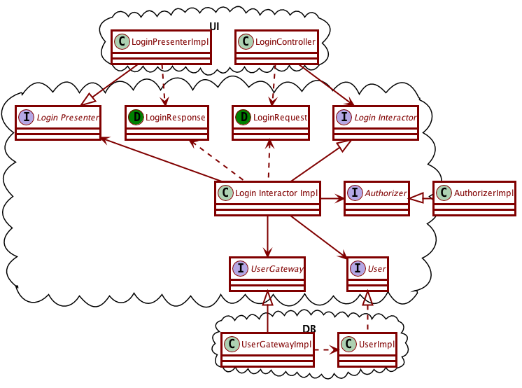

Activity 10-3 Mocking
Following along with video: Mocking
An extended example of mocking
18:18-37:01 login interactor diagram and details

TODO: Do more with example?
Test doubles
39:30-61:00 test doubles classification
Test doubles are objects that stand in for other objects for the purposes of testing.
- Dummies are test doubles that do nothing; they just implement an interface, and we don’t care about what their values return.
- Stubs are dummies that return special fixed values that are needed to drive the code into a particular path.
- Spies are stubs that further remember the way their methods were called. It watches, and remembers.
- Mocks are spies that further know what should happen with the test. At the end, instead of asking the mock about details, the test method asks the mock if everything went as expected.
- Fakes are different. They are like a “simulator”, with possibly a lot of logic on them. They used to be common in the days before test-driven-development and mocks.